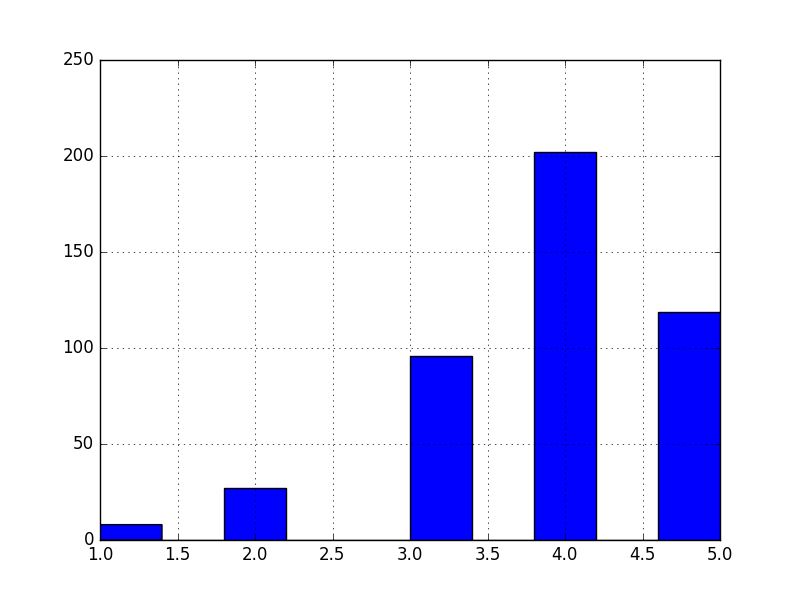
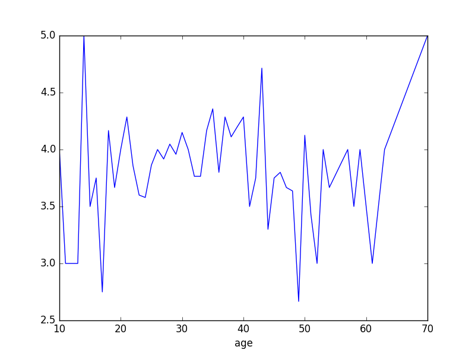

Pandas
Christoph Paulik
A Python Data Analysis Library
- Built on top of numpy to make data analysis easier
- Automatic data alignment based on labels or indices
- Data aggregation, transformation and grouping
- Intuitive merging and joining of datasets
- Hierarchical labeling
- Reading and Writing of CSV, Excel and others
Pandas.Series
- For storing indexed 1D data
creation from numpy array with list as index
s = pd.Series(np.arange(5), index=['a', 'b', 'c', 'd', 'e']) print s
a 0 b 1 c 2 d 3 e 4 dtype: int64
Index is created if not set
pd.Series(randn(5))
0 0.677638 1 -0.413150 2 -1.252496 3 -0.717212 4 0.091973 dtype: float64
Series is like an array
s[0] print("\n") s[s > s.median()] print("\n") s[[3,2,1]]
0 d 3 e 4 dtype: int64 d 3 c 2 b 1 dtype: int64
Series is like a dictionary
s['a'] s['e'] = 6 s 'e' in s 'f' in s
0 >>> a 0 b 1 c 2 d 3 e 6 dtype: int64 True False
Operations on Series
s+s s**2 np.exp(s)
a 0 b 2 c 4 d 6 e 12 dtype: int64 a 0 b 1 c 4 d 9 e 36 dtype: int64 a 1.000000 b 2.718282 c 7.389056 d 20.085537 e 403.428793 dtype: float64
Pandas.DataFrame
A 2D labeled data structure with columns of potentially different types.
Like Series, DataFrame accepts many different kinds of input:
- Dict of 1D ndarrays, lists, dicts, or Series
- 2-D numpy.ndarray
- Structured or record ndarray
- A Series
- Another DataFrame
From dictionary
d = {'one' : pd.Series([1., 2., 3.], index=['a', 'b', 'c']), 'two' : pd.Series([1., 2., 3., 4.], index=['a', 'b', 'c', 'd'])} df = pd.DataFrame(d)
df
one two a 1 1 b 2 2 c 3 3 d NaN 4 [4 rows x 2 columns]
From other DataFrame
pd.DataFrame(df, index=['d', 'b', 'a'])
one two d NaN 4 b 2 2 a 1 1 [3 rows x 2 columns]
pd.DataFrame(d, index=['d', 'b', 'a'], columns=['two', 'three'])
two three d 4 NaN b 2 NaN a 1 NaN [3 rows x 2 columns]
Complex cases
df2 = pd.DataFrame({'A': 1., 'B': pd.Timestamp('20130102'), 'C': pd.Series(1,index=list(range(4)), dtype='float32'), 'D': np.array([3] * 4,dtype='int32'), 'E': 'foo' })
df2
A B C D E 0 1 2013-01-02 1 3 foo 1 1 2013-01-02 1 3 foo 2 1 2013-01-02 1 3 foo 3 1 2013-01-02 1 3 foo [4 rows x 5 columns]
df2 = pd.DataFrame({'A': 1., 'B': pd.Timestamp('20130102'), 'C': pd.Series(1,index=list(range(4)), dtype='float32'), 'D': np.array([3] * 4,dtype='int32'), 'E': 'foo' })
df2.dtypes
A float64 B datetime64[ns] C float32 D int32 E object dtype: object
Time series
# Date range dates = pd.date_range('20130101', periods=6) # Dataframes df = pd.DataFrame(np.random.randn(6, 4), index=dates, columns=list('ABCD'))
df
A B C D
2013-01-01 -0.597478 -1.766741 -1.228745 -1.019179
2013-01-02 -0.352587 0.185867 -0.029261 0.668548
2013-01-03 -1.919182 1.263051 -0.447114 -2.265783
2013-01-04 -0.768178 -0.992339 -0.539134 -0.716079
2013-01-05 -1.338250 1.137091 -0.463499 0.166856
2013-01-06 -0.145799 1.510115 0.199905 -1.671450
[6 rows x 4 columns]
Inspection
df.head()
A B C D
2013-01-01 -0.597478 -1.766741 -1.228745 -1.019179
2013-01-02 -0.352587 0.185867 -0.029261 0.668548
2013-01-03 -1.919182 1.263051 -0.447114 -2.265783
2013-01-04 -0.768178 -0.992339 -0.539134 -0.716079
2013-01-05 -1.338250 1.137091 -0.463499 0.166856
[5 rows x 4 columns]
df.tail(3)
A B C D
2013-01-04 -0.768178 -0.992339 -0.539134 -0.716079
2013-01-05 -1.338250 1.137091 -0.463499 0.166856
2013-01-06 -0.145799 1.510115 0.199905 -1.671450
[3 rows x 4 columns]
Columns and values
df.columns, df.values
(Index([u'A', u'B', u'C', u'D'], dtype='object'),
array([[-0.5974781 , -1.7667411 , -1.22874526, -1.01917904],
[-0.35258701, 0.18586746, -0.02926123, 0.66854813],
[-1.91918192, 1.26305083, -0.44711442, -2.26578336],
[-0.76817814, -0.99233886, -0.53913413, -0.71607881],
[-1.33825025, 1.13709066, -0.46349936, 0.16685614],
[-0.14579853, 1.51011523, 0.19990501, -1.6714503 ]]))
Describe a DataFrame
df.describe()
A B C D
count 6.000000 6.000000 6.000000 6.000000
mean -0.853579 0.222841 -0.417975 -0.806181
std 0.662607 1.342492 0.491492 1.100386
min -1.919182 -1.766741 -1.228745 -2.265783
25% -1.195732 -0.697787 -0.520225 -1.508382
50% -0.682828 0.661479 -0.455307 -0.867629
75% -0.413810 1.231561 -0.133725 -0.053878
max -0.145799 1.510115 0.199905 0.668548
[8 rows x 4 columns]
DataFrame Slicing Overview
| Operation | Syntax | Result |
|---|---|---|
| Select column | df[col] |
Series |
| Select row by label | df.loc[label] |
Series |
| Select row by integer location | df.iloc[loc] |
Series |
| Slice rows | df[5:10] |
DataFrame |
| Select rows by boolean vector | df[bool_vec] |
DataFrame |
By column or row slice
df['A']
2013-01-01 -0.597478 2013-01-02 -0.352587 2013-01-03 -1.919182 2013-01-04 -0.768178 2013-01-05 -1.338250 2013-01-06 -0.145799 Freq: D, Name: A, dtype: float64
df[0:3]
A B C D
2013-01-01 -0.597478 -1.766741 -1.228745 -1.019179
2013-01-02 -0.352587 0.185867 -0.029261 0.668548
2013-01-03 -1.919182 1.263051 -0.447114 -2.265783
[3 rows x 4 columns]
by index
df['20130102':'20130104']
A B C D
2013-01-02 -0.352587 0.185867 -0.029261 0.668548
2013-01-03 -1.919182 1.263051 -0.447114 -2.265783
2013-01-04 -0.768178 -0.992339 -0.539134 -0.716079
[3 rows x 4 columns]
from datetime import date df[date(2013,1,2):date(2013,1,4)]
A B C D
2013-01-02 -0.352587 0.185867 -0.029261 0.668548
2013-01-03 -1.919182 1.263051 -0.447114 -2.265783
2013-01-04 -0.768178 -0.992339 -0.539134 -0.716079
[3 rows x 4 columns]
by integer location
df.iloc[[4, 2]]
A B C D
2013-01-05 -1.338250 1.137091 -0.463499 0.166856
2013-01-03 -1.919182 1.263051 -0.447114 -2.265783
[2 rows x 4 columns]
Grouping
gp = pd.DataFrame({'A' : ['foo', 'bar', 'foo', 'bar', 'foo', 'bar', 'foo', 'foo'], 'B' : ['one', 'one', 'two', 'three', 'two', 'two', 'one', 'three'], 'C' : np.random.randn(8), 'D' : np.random.randn(8)}) gp
A B C D
0 foo one 0.830803 -0.503587
1 bar one -0.071898 1.317533
2 foo two -0.131731 -0.330722
3 bar three -0.610325 -1.898784
4 foo two -0.832449 -0.336441
5 bar two 1.267449 -0.612326
6 foo one -0.335574 0.502221
7 foo three 0.936589 0.798455
[8 rows x 4 columns]
gp.groupby('A').sum()
C D
A
bar 0.585226 -1.193577
foo 0.467638 0.129927
[2 rows x 2 columns]
gp.groupby(['A','B']).mean()
C D
A B
bar one -0.071898 1.317533
three -0.610325 -1.898784
two 1.267449 -0.612326
foo one 0.247614 -0.000683
three 0.936589 0.798455
two -0.482090 -0.333581
[6 rows x 2 columns]
Merging
left = pd.DataFrame({'key': ['one', 'two'], 'lval': [1, 2]}) right = pd.DataFrame({'key': ['two', 'one'], 'rval': [4, 5]}) pd.merge(left, right, on='key')
key lval rval 0 one 1 5 1 two 2 4 [2 rows x 3 columns]
Plotting
Pandas has built-in functions for common plot types
import matplotlib.pyplot as plt df = pd.DataFrame(randn(1000, 4), index=pd.date_range('1/1/2000', periods=1000), columns=list('ABCD')) df = df.cumsum() ax = df.plot()

Working with a dataset
Let's try working with the Movielens 100k dataset
- 1000 Users
- 100,000 Ratings
- 1700 Movies
Extract the ml-100k.zip to a folder ml-100k in the same directory as the lecture7.py
Reading the data
# pass in column names for each CSV u_cols = ['user_id', 'age', 'sex', 'occupation', 'zip_code'] users = pd.read_csv('ml-100k/u.user', sep='|', names=u_cols) r_cols = ['user_id', 'movie_id', 'rating', 'unix_timestamp'] ratings = pd.read_csv('ml-100k/u.data', sep='\t', names=r_cols) # the movies file contains columns indicating the movie's genres # let's only load the first five columns of the file with usecols m_cols = ['movie_id', 'title', 'release_date', 'video_release_date', 'imdb_url'] movies = pd.read_csv('ml-100k/u.item', sep='|', names=m_cols, usecols=range(5)) # create one merged DataFrame movie_ratings = pd.merge(movies, ratings) lens = pd.merge(movie_ratings, users)
How does the data look like?
lens.head(3)
movie_id title release_date video_release_date \
0 1 Toy Story (1995) 01-Jan-1995 NaN
1 4 Get Shorty (1995) 01-Jan-1995 NaN
2 5 Copycat (1995) 01-Jan-1995 NaN
imdb_url user_id rating \
0 http://us.imdb.com/M/title-exact?Toy%20Story%2... 308 4
1 http://us.imdb.com/M/title-exact?Get%20Shorty%... 308 5
2 http://us.imdb.com/M/title-exact?Copycat%20(1995) 308 4
unix_timestamp age sex occupation zip_code
0 887736532 60 M retired 95076
1 887737890 60 M retired 95076
2 887739608 60 M retired 95076
[3 rows x 12 columns]
What are the 10 most rated movies?
most_rated = lens.groupby('title').size().order(ascending=False)[:10] print most_rated
title Star Wars (1977) 583 Contact (1997) 509 Fargo (1996) 508 Return of the Jedi (1983) 507 Liar Liar (1997) 485 English Patient, The (1996) 481 Scream (1996) 478 Toy Story (1995) 452 Air Force One (1997) 431 Independence Day (ID4) (1996) 429 dtype: int64
Which movies are most highly rated?
The agg function can take multiple functions that are applied to a column
movie_stats = lens.groupby('title').agg({'rating': [np.size, np.mean]}) movie_stats.head()
rating
size mean
title
'Til There Was You (1997) 9 2.333333
1-900 (1994) 5 2.600000
101 Dalmatians (1996) 109 2.908257
12 Angry Men (1957) 125 4.344000
187 (1997) 41 3.024390
[5 rows x 2 columns]
Which movies are most highly rated?
Sort them by mean rating
movie_stats.sort([('rating', 'mean')], ascending=False).head()
rating
size mean
title
Marlene Dietrich: Shadow and Light (1996) 1 5
Prefontaine (1997) 3 5
Santa with Muscles (1996) 2 5
Star Kid (1997) 3 5
Someone Else's America (1995) 1 5
[5 rows x 2 columns]
Which movies are most highly rated?
Lets only look at movies rated at least 100 times
atleast_100 = movie_stats['rating'].size >= 100 movie_stats[atleast_100].sort([('rating', 'mean')], ascending=False).head()
rating
size mean
title
Close Shave, A (1995) 112 4.491071
Schindler's List (1993) 298 4.466443
Wrong Trousers, The (1993) 118 4.466102
Casablanca (1942) 243 4.456790
Shawshank Redemption, The (1994) 283 4.445230
[5 rows x 2 columns]
Exercise
### Exercise ### ### Try to plot the ratings distribution of a movie of your choice. ### you can use the hist() function to produce a histogram
Solution
toy_story = lens[lens.title=='Toy Story (1995)'] plt.figure() ax = toy_story.rating.hist() plt.savefig('hist.png') 'hist.png'

Exercise 2
### Exercise ### ### plot the mean rating by age of user
Solution
age_grouped = toy_story.groupby('age').mean() plt.figure() ax = age_grouped['rating'].plot() plt.savefig('age-ratings.png') 'age-ratings.png'

Additional Resources
- Pandas website - The documentation is very thorough and full of examples
- List of pandas tutorials
- using pandas on the movielens dataset (blogpost from which I took some examples)